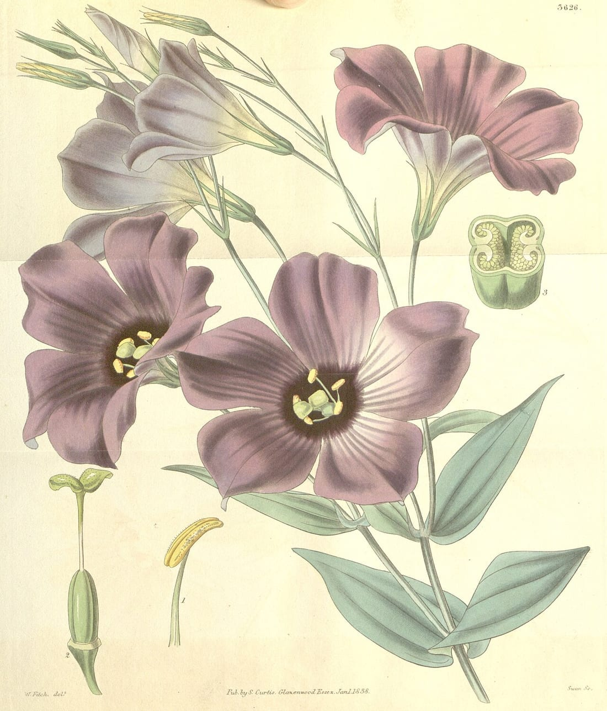
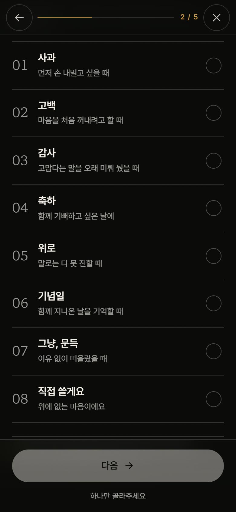
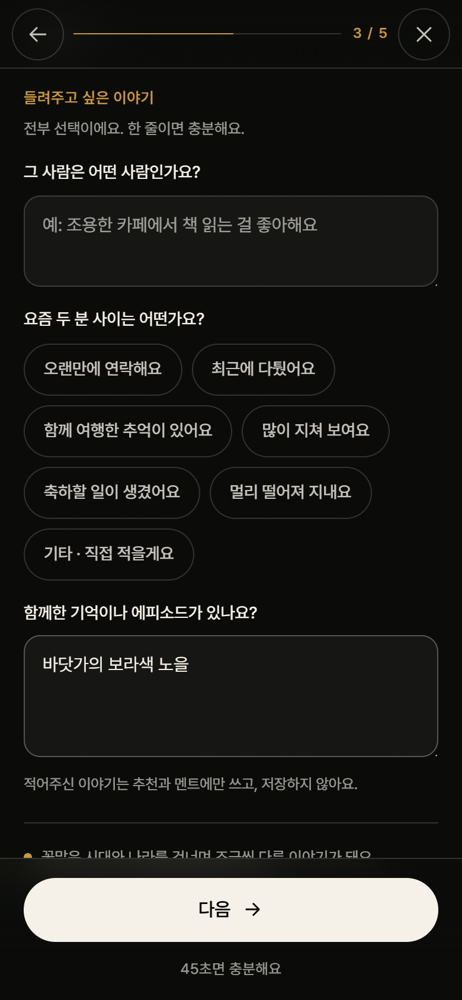
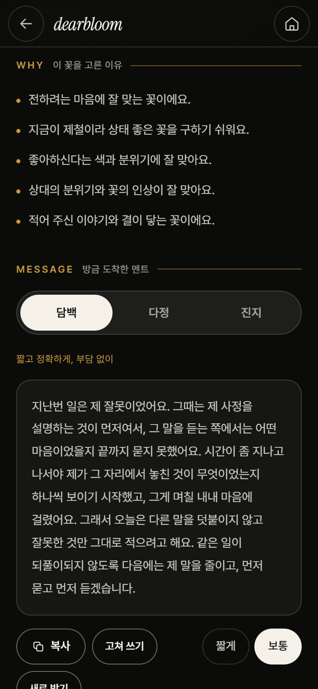

서비스 컨셉
관계와 마음을 들려주면,
DearBloom이 어울리는 꽃을 추천하고 그 이유를 설명합니다
DearBloom은 관계와 상황, 취향과 추억, 안전 조건까지 읽고 검증된 꽃 데이터에서 성격이 다른 꽃 세 가지(안심·의미·대담)와 고른 이유를 함께 내놓습니다. 아래 네 화면은 지금 바로 눌러 볼 수 있는 프로토타입입니다.

01마음부터 고릅니다

02그 사람 이야기 그대로

03서로 다른 결의 꽃 세 가지

04고른 이유와 전할 문장
서비스 컨셉
03/05